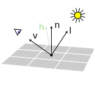
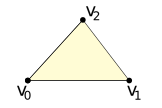

The lighting equation depends upon the presense of a view vector $\V{v}$, a light vector $\V{l}$, and a normal vector $\V{n}$.
The view and light are given, as the location of the viewer and light are constant.
However, the normal vector is a property of the object. To compute the normal vector $\V{n}$, consider each triangle in turn.
Three vertex positions, $\V{v}_0$, $\V{v}_1$, and $\V{v}_2$, define a triangle.
